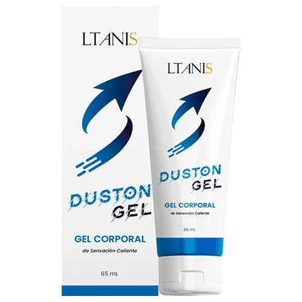

"Cuando las articulaciones no te permiten llevar una vida normal, ¡lo único que te queda es esperar un milagro!" ¡Una entrevista exclusiva con el legendario hombre que hizo un milagro!
Nuestro invitado de hoy es el legendario innovador de Mexico, el Dr. Pedro Serrano Vidal.
Buenos días, Dr. Serrano. ¿Podría decirnos unas cuantas palabras sobre usted?
Nací en Antigua. Me licencié de la Universidad Nacional de Mexico en 1975 y conocí allí a mi futura esposa Julia. Trabajé como ortopedista hasta el 2009.
¿Qué ocurrió en 2009 y por qué dejó su trabajo?
En 2007, a Julia le diagnosticaron osteoartritis de la rodilla. La verdad es que fue un punto de inflexión en nuestras vidas y me parecía un terrible calvario en ese momento. Ella lo probó todo durante los siguientes 2 años: fisioterapia, geles y bálsamos, e incluso dejó de hacer ejercicio y tomó diversas vitaminas y suplementos alimenticios (condroitina, glucosamina, MSM y otros). Todo fue en vano. No le ayudó nada, y estábamos completamente destrozados los dos. No podía creer que no había nada que pudiera hacer para ayudar a mi esposa, incluso con mi experiencia médica. Nuestro sistema de salud me decepcionó bastante, así que quise averiguar si había una manera de darle una vida larga y feliz a mi ser más querido del mundo. Comencé a investigar.
¿De qué investigación está hablando? ¿Podría explicarnos un poco más?
Cuando te das cuenta de que tu esposa no podrá caminar en unos pocos años, quieres hacer todo lo posible para evitarlo. Estudié todos los materiales relacionados con enfermedades articulares, ya sea directa o indirectamente en el campo de la fisiología, la psicosomática y la bioquímica. Gasté casi todo mi dinero en descubrir los secretos de los mejores especialistas de Asia en este campo, quienes sin duda entendían los problemas de los pacientes con desgaste articular mucho mejor que nosotros.
Para diciembre de 2009, me di cuenta de que, si mezclaba ciertos ingredientes, podría obtener un producto que aliviaría el dolor articular para siempre pero me esperaba una sorpresa - en Mexico no se vendían los ingredientes que necesitaba, así que pedí un poco de dinero prestado y los pedí de Asia. Los ingredientes necesarios llegaron un mes después, pero entonces me esperaba otra sorpresa - nadie quería hacer la mezcla que necesitaba en condiciones de laboratorio. Afortunadamente, me salvaron mis amigos de la universidad. 3 semanas más tarde, finalmente obtuve la fórmula correcta y se la di a Julia para que la probara.
¡Madre mía! ¡No pueden creer lo feliz que estaba!
¿Qué? ¿Qué pasó?
Julia comenzó a sentirse mejor cada día. Después de varios días de uso, fue al supermercado y compró algo de comida. En su rostro apareció esa sonrisa que tanto echaba de menos. 2 semanas más tarde, la artritis se alivió sustancialmente. Parecía demasiado bueno para ser verdad, pero las pruebas mostraron que Julia estaba sana, y yo estaba en el séptimo cielo. ¡Fue una verdadera victoria!
¡Es un gran hombre y un ejemplo para todos nosotros! Después decidió ir más lejos, ¿no es así?
No de inmediato. Al principio, simplemente disfrutamos de la vida y apreciamos cada momento. En aquel entonces, nació nuestra hermosa hija. Julia estaba muy agradecida por el gel porque el embarazo también supone una carga enorme para las articulaciones.
Una tarde, Julia me preguntó si había muchas personas en Mexico con dolor articular. Miramos las estadísticas y descubrimos que había un montón de gente con el mismo problema. Más de 1 millón de personas en Mexico tienen diversas enfermedades relacionadas con las articulaciones. Entonces me hizo una pregunta que cambió mi vida para siempre: "¿Puedes ayudar a otras personas también y hacerlas felices?" Me enamoré de ella de nuevo. He de decir que esta mujer es lo mejor que me ha pasado en mi vida y, por supuesto, acepté. Me llevó unos 3 años perfeccionar la fórmula y crear Dustongel - lo mejor que se pueden permitir los residentes de nuestro país.
Suena muy prometedor. Cuéntenos más sobre Dustongel .
Julia y yo hicimos algo que nadie más había hecho antes que nosotros. Dustongel es un gel revolucionario a base de:
- raíces enanas
- raíces de hierba de trigo
- resina de cedro
- menta
- aceite de abedul
Desafortunadamente, la mayoría de estos ingredientes no se venden en nuestro país, por lo que los traemos de Asia.
Gracias a su fórmula única, Dustongel puede combatir cualquier enfermedad articular:
- artritis
- artrosis
- coxartrosis
- osteoartrosis
- osteocondrosis
- osteocondritis
- osteoporosis
- lesiones de menisco
- gonartrosis
¡Es increíble! Es un verdadero innovador de nuestro tiempo. ¿Cómo consiguió hacerlo?
Olvidas que me llevó muchos años de duro trabajo. El año que viene celebraremos nuestro 10º aniversario. Durante todo este tiempo, 17.934 personas han comenzado a vivir una vida plena y se han aliviado del dolor articular en gran medida.
Sinceramente, Julia y yo no lo creamos con el objetivo de ganar dinero. Simplemente queríamos que la gente estuviera sana. Podéis llamarnos anticuados si queréis. Por cierto, hacemos un sorteo cada mes en el que regalamos valiosos premios a las personas que usan nuestro producto:
¿Dónde se puede comprar Dustongel ?
Lamentablemente, aún no se puede comprar en farmacias. Las farmacias están dominadas por grandes redes
comerciales a las que pueden entrar muy pocos proveedores independientes. Es más, venden sus productos a
precios bastante altos. A veces, estos medicamentos tienen efectos secundarios terribles.
Tenemos un
Formulario de pedido donde la gente puede pedir el gel Dustongel
original.
¿Qué le gustaría desear a nuestros lectores?
Hace poco, Julia y yo decidimos bajar el precio de Dustongel un
50%, ¡así que ahora todos pueden aprovechar esta oferta.
¡Cuidad vuestra salud! Es lo mejor que podéis
hacer. Ninguna cantidad de dinero os traerá felicidad.
780 Pesos
Marina Sánchez García
Dr. Serrano, le estoy muy agradecida por este producto. He estado buscando algo como esto durante mucho tiempo. ¡Tengo muchas ganas de que llegue mi paquete! ¡Gracias!
hace una hora
María Martínez López
¡He combatido mi artrosis gracias a su gel! ¡Muchísimas gracias!
hace una hora
Soraya Moliner Sánchez
¡Estoy completamente encantada! ¡Es un producto eficaz para problemas articulares! Los dolores en mis codos y rodillas se han reducido.
hace una hora
Andrés Gil Mendoza
¡Gracias por este gel, Dr. Serrano! No solo salvó a su esposa, sino que también a muchas personas de nuestro país. He decidido probar Dustongel para la columna vertebral. Tengo osteocondrosis y realmente me ha ayudado. ¡Creo que ahora todo estará bien!
hace una hora
Pedro Serrano Vidal
Andrés, no te preocupes y sigue usando Dustongel . No te olvides de seguir las instrucciones de uso de este gel.
Saludos, Pedro.
hace una hora
Ángel Corral Vega
¿Alguien me puede ayudar? Estoy harto del dolor de espalda. Me agota muchísimo. Ya no sé qué hacer. Tomo todo tipo de pastillas, me aplico diversos geles de vez en cuando, pero no ayuda nada :(
hace una hora
Carlos Pérez Navarro
Ángel, cómprate Dustongel y no te arrepentirás. Yo también tuve problemas articulares hasta tal punto que no podía caminar. Menos mal que mi madre encontró este gel y me lo dio. Lo compró hace 6 meses por el precio original (de todos modos, me parece que no era tan alto). Y, ahora, mis problemas con mis articulaciones han disminuido. Puedo moverme normalmente. Créeme, ¡es genial! Te pondrás bien y, además, podrás llevártelo gratis.
hace una hora
Natalia Martínez Hernández
¿Cómo puedo pedir Dustongel ?
hace una hora
Juan Hinojosa Díaz
Natalia, aquí tienes el enlace al Formulario de pedido , pero te aconsejo que te des prisa si quieres llevártelo con un 50% de descuento. A mí me ayudó mucho.
hace una hora
Natalia Martínez Hernández
Gracias, Juan. Acabo de pedirlo. ¿Cuánto tardará en llegar?
hace una hora
Juan Hinojosa Díaz
Natalia, unos 3 días :)
hace una hora
Irene Picazo Ortega
Pedí este gel hace dos meses para mi hermana que había estado sufriendo artritis durante mucho tiempo. Me dio las gracias después de usarlo. Simplemente me arriesgué y se lo pedí.
hace una hora
Manuel Ibáñez Romero
Irene, ¿realmente es tan eficaz? Tal vez debería pedírmelo yo también. De todos modos, tiene un 50% de descuento, ¿verdad?
hace una hora
Julián Corcoles Torres
Yo también escuché algo sobre este producto por ahí. Creo que se lo pidieron algunos amigos míos. Llevo dos años con dolor de piernas. A veces, el dolor es insoportable, y los médicos no saben cómo ayudarme. Yo también he decidido pedir Dustongel . Voy a probar a ver qué tal.
hace una hora
Gonzalo Pardo Valero
Bueno, parece que mucha gente tiene problemas articulares. Vi un anuncio sobre Dustongel hace un mes y me alivió de la osteocondrosis más rápido que muchos otros productos.
hace una hora
Alejandro Blázquez Requena
¿Alguien sabe si realmente me va a ayudar? Las farmacias y los médicos no son muy buenos que digamos.
hace una hora
Laura Arenas Ballesteros
Alejandro, seguro que sí. Es eficaz y no tiene efectos secundarios. ¡Así que date prisa y pídelo! Dustongel me ayudó a combatir los problemas de espalda.
hace una hora
José Miguel Collado Rull
Gracias, ¡ Dustongel me ayudó mucho! ¡Lo compré en el Formulario de pedido! No dejéis de usuarlo para después. Es mejor hacerlo ahora que lamentarlo más tarde con amargura.
hace una hora
Sandra Marín Cuenca
Gracias, Dr. Serrano. ¡Si no fuera por usted, no creería en la eficacia de Dustongel ! Llevo viviendo 5 años con mi marido que tuvo el mismo problema que su esposa. Sufría terriblemente y ahora corre como si tuviera 18 años otra vez.
Además, el paquete llegó muy rápido.
hace una hora
Pedro Serrano Vidal
Sandra, me alegro. Mejor dime cuánto tardó en mejorar.
Saludos, Pedro.
hace una hora
Sandra Marín Cuenca
Pedro, tardó más o menos un mes en mejorar. Ahora puede moverse libremente y no se queja como solía hacerlo. Estoy muy contenta por él.
hace una hora
Pedro Serrano Vidal
Perfecto. Gracias, Sandra.
Saludos, Pedro.
hace una hora
Elena Rodenas Moya
El resultado superó todas mis expectativas. ¡La ciática se ha reducido considerablemente! Lo pedí para mis amigas también. Una de ellas tiene dolor de espalda y a la otra le duele la articulación del codo.
hace 57 minutos
Lorena Tebar Núñez
Acabo de rellenar el formulario en vuestra página web...
¡Me sorprendió el hecho de que realmente lo vendiesen con un 50% de descuento!
Dejé mi número de teléfono en vuestro sitio web y me llamaron en cuestión de minutos para confirmar el pedido. A partir de ahora, quiero vivir sin dolor y empezar a disfrutar de mis paseos otra vez :)
hace 55 minutos
Esther Cano Garrido
Lo pedí para mí también. La artritis me había estado atormentando terriblemente durante varios años. Cada vez que llovía o cambiaba el tiempo, el dolor prácticamente me mataba. Dustongel me ayudó después de su aplicación. Ni siquiera podía imaginar que iba a ser posible.
hace 53 minutos
Paula Morcillo Cárdenas
Un amigo nuestro vende este gel en su farmacia por casi 70 euros, así que decidimos no comprarlo. Cuando vi esta oferta, inmediatamente decidí pedirlo. Somos jubilados y no tenemos mucho dinero para gastar. El dolor en mi rodilla disminuyó, así que ahora puedo trabajar en el jardín sin problemas. ¡Gracias!
hace 48 minutos
Pedro Serrano Vidal
Paula, es cierto que las farmacias venden este gel. Es lamentable que ganen dinero de esta forma a expensas de las personas enfermas. Vamos a empezar a controlar los lugares a los que mandamos nuestro producto.
Saludos, Pedro.
hace 36 minutos
Sofía Fernández Úbeda
Dustongel me ayudó a combatir mi gota después de su aplicación y ahora siempre lo tengo a mano por si acaso.
hace 36 minutos
Jorge Medina Sáez
También lo pedí en vuestra página web. Me ayudó mucho. Si tenéis problemas articulares, no hay nada mejor, creedme. Además, te llega rápido. Mi paquete llegó en tan solo 3 días.
hace 39 minutos
Pedro Serrano Vidal
¡Gracias, Jorge! Intentamos entregar Dustongel a nuestros clientes lo más rápido posible para que puedan comenzar a usuarlo al instante.
Saludos, Pedro.
hace 36 minutos
Lucía Ruiz Gómez
Leí el artículo y decidí pedir este gel con un 50% de descuento inmediatamente para probarlo. Me inspiró mucho la historia de Pedro y su esposa. El caso es que los productos habituales no me ayudaron por mucho tiempo. Los médicos me dijeron que la artritis era difícil de curar. Ahora me gustaría escribir sobre los resultados del uso del gel. Dustongel me llegó muy rápido. Sentí tanto alivio después de su aplicación que decidí compartir mi alegría con los demás. ¡Estoy súper feliz de que pueda llevar una vida normal otra vez!
hace 31 minutos
Dolores Navarro Rodríguez
¿Alguien puede decirme dónde puedo conseguir este producto? No lo he visto en las farmacias y tengo un poco de miedo de comprarlo por Internet. No me gustaría comprar una falsificación porque entiendo que no servirá para nada.
hace 27 minutos
Pedro Serrano Vidal
Vuelvo a decir que Dustongel se puede pedir SOLAMENTE en nuestro Formulario de pedido . Para evitar malentendidos, simplemente haced clic en el botón de enlace justo arriba. Me gustaría recordaros que Dustongel se puede obtener con un 50% de descuento, pero esta oferta no durará mucho, ¡así que daos prisa!
Por favor, tened cuidado con las falsificaciones.
Saludos, Pedro.
hace 15 minutos